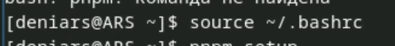

Получение навыков правильной работы с репозиториями git.
Выполнить работу для тестового репозитория. Преобразовать рабочий репозиторий в репозитории с git-flow и обычными коммитами.
Установка git-flow
Установка Node.js

Устанавливаю pnpm

Запускаю pnpm
Выполняю

Данная программа используется для помощи в форматировании
коммитов.

При этом устанавливается скрипт git-cz, который мы и будем
использовать для коммитов.
Данная программа используется для помощи в создании логов.

Создаю репозиторий с название git-extended на GitHub
И скачиваю себе на Sway
Делаю первый коммит и выкладываем на github:
Конфигурация для пакетов Node.js
Заполняю несколько параметров

Получаю такой результат

Добавляю новые файлы и выполняю коммит:
Инициализируем git-flow
Префикс для ярлыков устанавливаю в v
Проверяю, что я на ветке develop:
Загружаю весь репозиторий в хранилище:

Устанавливаю внешнюю ветку как вышестоящую для этой ветки и создаю
релиз с версией 1.0.0
Отправим данные на github


Создаю релиз на github. Для этого буду использовать утилиты работы с
github:

Создаю релиз с версией 1.2.3:
Обновляю номер версии в файле package.json и получаю такой
результат
Добавляю журнал изменений в индекс
Отправляю данные на github

Создаю релиз на github с комментарием из журнала изменений с помощью коианды gh release create v1.2.3 -F CHANGELOG.md
Мы получили навыки работы с репозиториями git